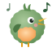

Welcher Vogel singt da?Nimm eine Vogelstimme auf oder lade eine Aufnahme hoch.
0:00
oder
Ergebnis
💾 Im Verlauf unter „Meine Funde“ gespeichert.
Deine Funde werden nur auf diesem Gerät im Browser gespeichert. Den Ortsnamen ermittelt die App über OpenStreetMap.
Erkannte Vögel
Tippe auf „Gesehen“, wenn du den Vogel auch gesehen hast.